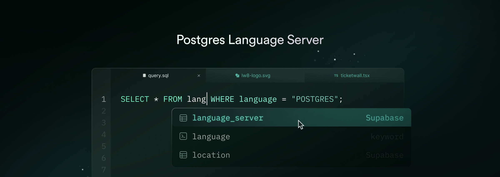

Postgres Tools
A collection of language tools and a Language Server Protocol (LSP) implementation for Postgres, focusing on developer experience and reliable SQL tooling.
Source Code: https://github.com/supabase-community/postgres-language-server
Overview
This project provides a toolchain for Postgres development
Postgres Language Server
CLI Demo
The toolchain is built on Postgres' own parser libpg_query to ensure 100% syntax compatibility. It uses a Server-Client architecture and is a transport-agnostic. This means all features can be accessed through the Language Server Protocol as well as various interfaces like a CLI, HTTP APIs, or a WebAssembly module.
The following features are implemented:
- Autocompletion
- Syntax Error Highlighting
- Type-checking (via
EXPLAINerror insights) - Linter, inspired by Squawk
We are currently focused on refining and enhancing these core features. For future plans and opportunities to contribute, please check out the issues and discussions. Any contributions are welcome!
Installation
There are various ways to use the toolchain.
CLI
Grab the executable for your platform from the latest CLI release on GitHub and give it execution permission:
curl -L https://github.com/supabase-community/postgres-language-server/releases/download/<version>/postgrestools_aarch64-apple-darwin -o postgrestools
chmod +x postgrestools
Now you can use Postgres Tools by simply running ./postgrestools.
NPM
If you are using Node, you can install the CLI via NPM. Run the following commands in a directory containing a package.json file.
npm add --save-dev --save-exact @postgrestools/postgrestools
VSCode
The language server is available on the VSCode Marketplace. Its published from this repo.
Neovim
You will have to install nvim-lspconfig, and follow the instructions.
GitHub Actions
To use the CLI in GitHub Actions, you can install it via our GitHub Action.
Configuration
We recommend creating a postgrestools.jsonc configuration file for each project. This eliminates repetitive CLI options and ensures that consistent configuration in your editor. Some options are only available from a configuration file. This step is optional: if you are happy with the defaults, you don’t need a configuration file. To create the postgrestools.jsonc file, run the init command in the root folder of your project:
postgrestools init
You’ll now have a postgrestools.jsonc file in your directory:
{
"$schema": "https://pgtools.dev/schemas/0.0.0/schema.json",
"vcs": {
"enabled": false,
"clientKind": "git",
"useIgnoreFile": false
},
"files": {
"ignore": []
},
"linter": {
"enabled": true,
"rules": {
"recommended": true
}
},
"db": {
"host": "127.0.0.1",
"port": 5432,
"username": "postgres",
"password": "postgres",
"database": "postgres",
"connTimeoutSecs": 10,
"allowStatementExecutionsAgainst": ["127.0.0.1/*", "localhost/*"]
}
}
Make sure to edit the database connection settings to connect to your local development database. To see all options, run postgrestools --help.
Usage
You can use Postgres Tools via the command line or a using a code editor that supports an LSP.
Using the CLI
The CLI exposes a simple check command that will run all checks on the given files or paths.
postgrestools check myfile.sql
Make sure to check out the other options by running postgrestools --help. We will provide guides for specific use cases like linting migration files soon.
Using the LSP Proxy
Postgres Tools has a command called lsp-proxy. When executed, two processes will spawn:
- a daemon that does execute the requested operations;
- a server that functions as a proxy between the requests of the client - the editor - and the server - the daemon; If your editor is able to interact with a server and send JSON-RPC requests, you only need to configure the editor to run that command.
Using the daemon with the binary
Using the binary via CLI is very efficient, although you won’t be able to provide logs to your users. The CLI allows you to bootstrap a daemon and then use the CLI commands through the daemon itself. In order to do so, you first need to start a daemon process with the start command:
postgrestools start
Then, every command needs to add the --use-server options, e.g.:
echo "select 1" | biome check --use-server --stdin-file-path=dummy.sql
Daemon logs
The daemon saves logs in your file system. Logs are stored in a folder called pgt-logs. The path of this folder changes based on your operative system:
- Linux:
~/.cache/pgt; - Windows:
C:\Users\<UserName>\AppData\Local\supabase-community\pgt\cache - macOS:
/Users/<UserName>/Library/Caches/dev.supabase-community.pgt
For other operative systems, you can find the folder in the system’s temporary directory.
You can change the location of the pgt-logs folder via the PGT_LOG_PATH variable.